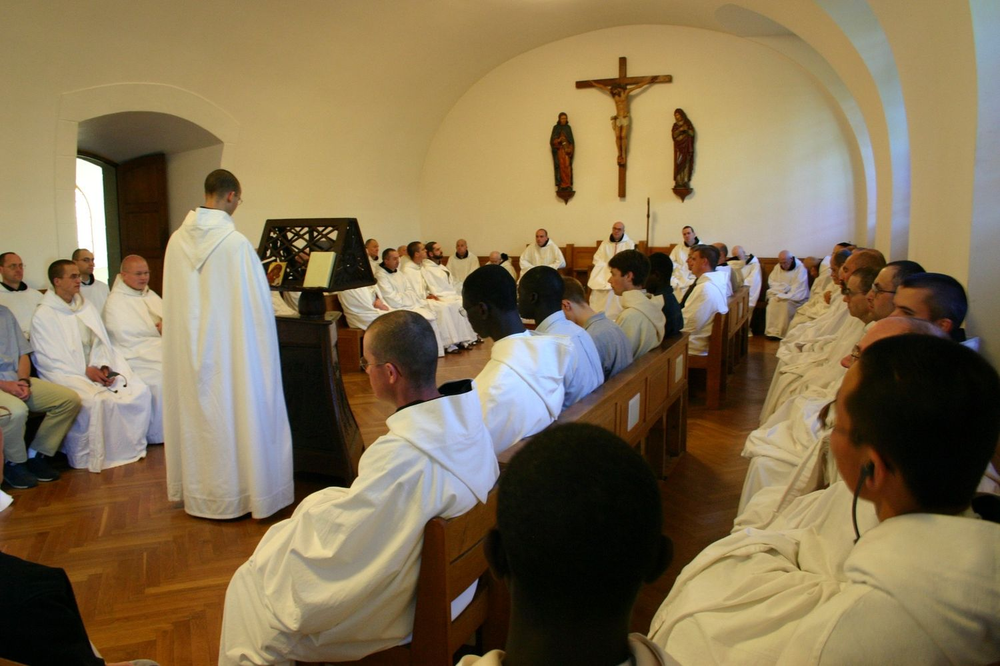
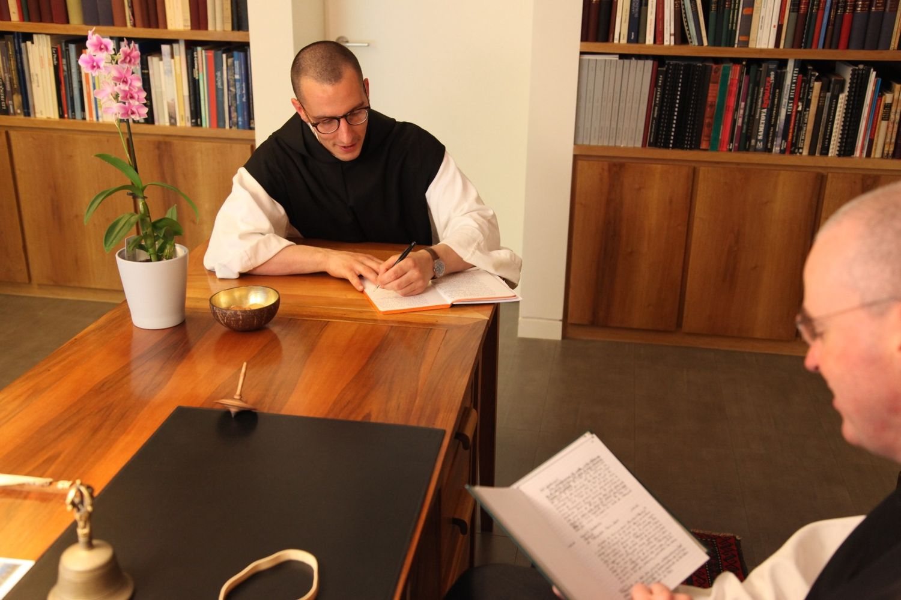

Le moine ne cherche pas Dieu seul. Il vient le chercher dans une communauté de frères. Il y trouve un soutien, mais aussi une vie à recevoir et un amour à apprendre.
Une vie que l’on reçoit
On ne se donne pas à soi-même la vie : on la reçoit. Dans une famille, l’enfant reçoit bien plus que la naissance. Il apprend à parler, à marcher, à entrer en relation avec les autres. Il grandit grâce à ceux qui l’ont précédé.
Il en va de même au monastère. Celui qui arrive entre dans une vie qui le précède. Il reçoit une manière de chercher Dieu, une sagesse et des moyens éprouvés, transmis de génération en génération par des hommes qui se sont eux-mêmes laissé façonner par cette vie.
C’est cela, une tradition vivante : non pas seulement des usages anciens que l’on conserve, mais un art de vivre avec Dieu que l’on reçoit pour en vivre à son tour.
Notre désir de chercher Dieu est indispensable, mais il ne suffit pas à nous montrer le chemin. Nous avons besoin du soutien des frères et de l’expérience de ceux qui nous précèdent. Nous n’avons pas à tout inventer seuls.

Apprendre à se laisser guider
Celui qui veut apprendre un instrument cherche un maître capable de lui transmettre son art. Il sait qu’il ne lui suffira pas d’aimer la musique pour devenir musicien. Il lui faudra écouter, s’exercer, accepter d’être corrigé et reprendre patiemment ce qu’il ne maîtrise pas encore.
Il ne renonce pas pour autant à son intelligence ou à sa liberté. Au contraire, il les engage dans un apprentissage qui lui permettra de progresser.
Au monastère aussi, il y a un art à apprendre : l’art de la vie avec Dieu. On le reçoit auprès d’hommes qui ont vécu la prière, traversé des épreuves et des combats, et qui ont la charge de nous former et de nous guider.
C’est dans cette perspective que l’on peut comprendre l’obéissance monastique. Le moine n’accepte pas d’obéir parce qu’il serait incapable de réfléchir ou de prendre ses responsabilités. Il choisit librement de se laisser conduire parce qu’il reconnaît qu’il a besoin de recevoir et d’apprendre.
Comme dans une cordée, celui qui connaît mieux le chemin aide les autres à avancer et à éviter les passages dangereux. Accepter de le suivre ne dispense pas de marcher : personne ne peut faire le chemin à notre place. Mais nous ne sommes pas seuls pour le découvrir.
Cette confiance n’abolit ni les questions ni le dialogue. Elle demande d’engager son intelligence, d’exprimer simplement ses difficultés et d’accepter aussi que l’on nous invite à aller au-delà de nos premières réactions. Peu à peu, nous apprenons à ne plus faire de nos préférences la seule mesure de ce qui est bon pour nous.

Dans la vie de prière, nous pouvons être tentés de mesurer notre relation à Dieu à ce que nous éprouvons. Un jour, la prière nous paraît facile et nous nous croyons proches de lui. Un autre jour, nous ne ressentons rien et nous pensons avoir tout perdu.
C’est aussi pour cela que nous avons besoin d’être guidés. L’expérience d’un ancien nous aide à prendre du recul, à comprendre ce que nous traversons et à porter un jugement plus sûr sur notre vie. Il ne s’agit pas d’ignorer nos sentiments, mais de ne pas leur laisser seuls le dernier mot.
Une école de charité
La communauté n’est pas seulement le lieu où l’on reçoit un enseignement. Elle est aussi celui où l’on apprend à aimer.
Nous venons au monastère pour chercher Dieu, mais nous ne pouvons pas séparer cette recherche de notre manière de vivre avec nos frères. L’amitié avec Jésus doit prendre corps dans les relations les plus ordinaires : rendre un service, écouter, partager un travail, accueillir une remarque, demander pardon.
Il ne s’agit pas simplement d’être gentils les uns avec les autres. Il s’agit d’apprendre un amour qui ne dépend pas seulement de la sympathie, de l’humeur ou de ce que l’autre nous apporte.

Les frères sont un soutien précieux. Leur fidélité nous encourage lorsque notre propre élan faiblit. Nous recevons leur aide, leur expérience, parfois une parole très simple qui nous permet de reprendre courage. Et, à notre tour, nous apprenons à les soutenir.
Mais les frères ne sont pas seulement ceux qui nous soutiennent. Ils sont aussi ceux qui nous dérangent et nous font découvrir nos limites. Nous ne les avons pas choisis : leurs caractères, leurs habitudes et leurs façons de faire ne correspondent pas toujours aux nôtres. Et voilà que notre désir d’aimer rencontre une difficulté très concrète : aimer ce frère-ci, tel qu’il est.
C’est là que la vie commune devient une école de charité. À travers nos frères, Dieu nous apprend à sortir de nous-mêmes et à nous ouvrir aux autres. Les contrariétés quotidiennes peuvent devenir autant d’occasions de lui laisser transformer notre cœur et de nous unir à lui. Ces petits renoncements sont un puissant moyen d’union à Dieu lorsque nous les vivons en nous tournant vers lui, en reconnaissant notre impuissance et notre besoin de sa grâce.
La vie commune n’est donc pas un simple cadre autour de la prière. Elle est l’un des lieux où notre prière devient une vie. Avec nos frères, nous apprenons à recevoir l’amour de Dieu et à y répondre par le don de nous-mêmes.